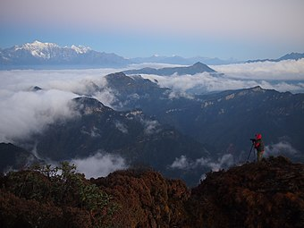
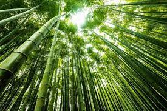

Больша́я па́нда, или бамбу́ковый медве́дь (лат. Ailuropoda melanoleuca) — вид всеядных млекопитающих из семейства медвежьих (Ursidae) со своеобразной чёрно-белой окраской шерсти, обладающих некоторыми признаками енотов. Единственный современный вид рода Ailuropoda подсемейства Ailuropodinae. Большие панды обитают в горных регионах центрального Китая: Сычуани, на юге Ганьсу и Шэньси. Со второй половины XX века панда стала чем-то вроде национальной эмблемы Китая. Китайское название (кит. упр. 熊猫, пиньинь xióngmāo) означает «медведь-кошка». Его западное имя происходит от малой панды. Раньше его также называли пятни́стым медве́дем. Известны случаи нападений больших панд на человека.
В подотряде псообразных существует семейство пандовых, куда большая панда не входит.
Навигация по содержанию:
Внешний вид
В длину большая панда достигает 1,2–1,8 м и имеет массу 70–160 кг. Самцы крупнее самок по размеру (на 10 %) и по массе (на 20 %). В отличие от других медведей, панда имеет довольно длинный хвост (10–15 см). Тело массивное, покрытое густым белым мехом с чёрными пятнами вокруг глаз, чёрными ушами и чёрными лапами. Короткие толстые задние лапы имеют острые когти. На подошвах и в основании каждого пальца хорошо развиты голые подушечки, облегчающие удерживание гладких стеблей бамбука.
Большие панды имеют необычные передние лапы — с «большим пальцем» и пятью обычными пальцами; «большой палец», который на самом деле является видоизменённой сесамовидной костью запястья, позволяет ловко управляться даже с тонкими побегами бамбука. Биолог Стивен Джей Гулд посвятил происхождению этого «шестого пальца» статью «The Panda’s Thumb», ставшую заглавной для сборника его трудов по эволюции.
Аналогичная анатомическая особенность есть и у малой панды, несмотря на то, что этот вид в эволюционном плане довольно далеко отстоит от большой панды и относится к другому семейству. Учёные из Института генетики и биологии развития Китайской академии наук при содействии коллег из британского Института Сенгера провели исследование и пришли к выводу, что хотя большая и малая панды имеют отдалённого общего предка, жившего свыше 40 млн лет назад, «шестой палец» не унаследован ими от него, а появился значительно позднее. Каждый из двух видов независимо от другого обрёл это дополнение в ходе конвергентной эволюции: бамбуковая диета и потребность в удержании бамбуковых стеблей, видимо, и стали, по предположению исследователей, причинами, в силу которых закрепились генетические изменения, отразившиеся в общих анатомических чертах малой и большой панд.
Распространение и среда обитания
Основной ареал большой панды ограничен восточными хребтами Сино-Тибетских гор: Миньшанем и Цюнлайшанем (включая его ответвление — горы Цзяцзинь). Южнее Цюнлайшаня ареал становится раздробленным. Он проходит между заснеженной горой Гунга и почитаемой буддистами горой Эмэй, оканчиваясь небольшим хребтом Сяосянлин.
Циньлинская разновидность бамбукового медведя обитает на западе одноимённого хребта, который к Сино-Тибетским горам не относится.
Большая панда постоянно живёт в диапазоне высот 1800—3200 м. Она предпочитает нижнюю полосу хвойных лесов. В поясе смешанных лесов её плотность идёт на спад. Она иногда поднимается выше границы леса до отметки 4100 м и спускается в пояс субтропических вечнозелёных лесов до высоты 1200 м.
В рационе большой панды преобладает бамбук из родов Arundinaria (Bashania) и Fargesia, который густо растёт в подлеске темнохвойных и смешанных лесов. Для выживания этого представителя семейства медвежьих требуется хотя бы два вида бамбука: раз в несколько десятилетий бамбук одного вида цветёт на больших площадях, после чего его старые стебли засыхают, а новые отрастают годами.
Ареал большой панды пересекается с центрами разнообразия фазановых и рододендрона. Тигр в местообитаниях бамбукового медведя был истреблён, а красный волк оказался на грани исчезновения. Для ареала большой панды и его ближайших окрестностей подтверждены рокселланов ринопитек и тибетский макак. Из хищников засняты гималайский медведь, серый волк и лисица, снежный барс и леопард. Литературные источники добавляют в этот список бурого медведя, дымчатого леопарда, рысь, кошку Темминка, бенгальскую кошку, манула, гималайскую цивету и прочих. Что касается копытных, то в объективы видеокамер попали такин, голубой баран, горал, серау, кабарга, хохлатый олень и кабан. Согласно литературным данным, здесь водятся архары, тибетские дзерены, беломордые и благородные олени, замбары и мунтжаки.
Образ жизни
Несмотря на то, что панды относятся к отряду хищных, фактически они питаются почти исключительно (более чем на 99 %) бамбуком (любым из 25 видов, присутствующих в дикой среде обитания). В день взрослая панда съедает до 30 кг бамбука и побегов. Для защиты от бамбуковых щепок пищевод и желудок выстланы толстым слоем упругой слизистой ткани. Если в каком-либо месте после цветения погибает весь бамбук, то живущим там пандам грозит смерть от голода (подобные случаи отмечались в 1975 и 1983 годах). По мнению некоторых учёных, гиперзависимость медведей от бамбука могла развиться относительно недавно — около 5000 лет назад. Изредка включают в свой рацион растения других видов. Кроме того, как и все медвежьи, панды всеядны: при доступности едят яйца, мелких птиц, зверьков, рыбу и некоторых насекомых, иногда — падаль. Животная пища для панд является дополнительным источником белка. В неволе, в зоопарках пандам обеспечивается бамбуковое питание; в рацион также включается специального состава печенье и другие диетические добавки.
